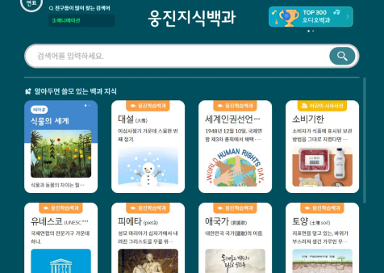
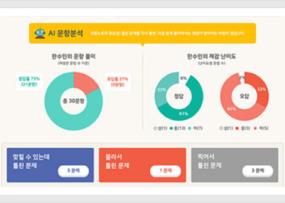
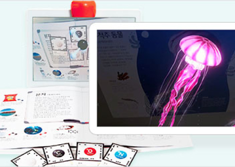

HOME > 사회공헌 > 학습결손 지원
학습결손 지원
‘따뜻한 사회, 아름다운 세상을 만들어 갑니다’
지원활동
-
영상재생
재생
- 초등학교 온라인 수업에 활용 가능한 스마트올 TV
- 웅진은 초등학교 아이들의 학습 공백을 최소화하기 위해 전학년 개념 설명이 되어 있는 영상 자료를 스마트올 TV를 통해 무료로 제공합니다.
-

- 초등학생 누구나 활용 가능한 학습 백과사전 제공
- 초등학생 눈높이에 맞춘 학년별, 교과별 교과과정이 기술된 '웅진 스마트올 백과'를 무료로 제공하여 초등학생 누구나 정확한 지식을 쉽게 이해할 수 있도록 돕습니다.
-

- 학습 공백 최소화를 위한 초등학교용 AI 학교 수학
- AI 기반 개인별 맞춤 학습을 제공하는 'AI 학교 수학'을 초등학교 선생님들께 무료로 제공하여 학습 공백을 최소화하고 있으며, 2022년 12월 기준, 전국 1,500여 개의 학급, 약 2만 명 이상의 학생들이 사용하고 있습니다.
-

- 핵심 과학 개념에 AR을 결합시킨 AR SCIENCE
- AR로 과학을 생생하게 체험해 볼 수 있는 'AR SCIENCE'를 초등학교 선생님들께 무상으로 지원하여 교육의 디지털 전환에 앞장서고 있습니다.